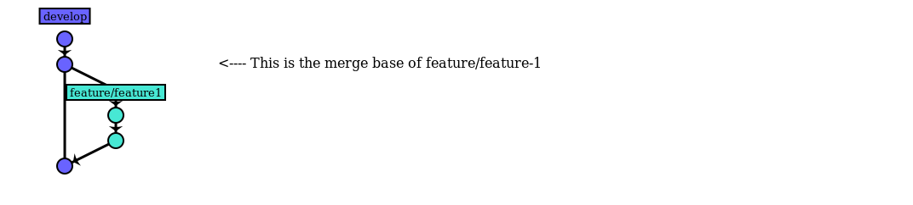
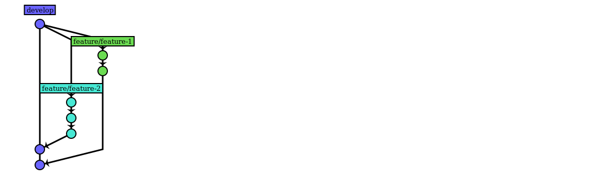

- An Introduction
Agenda
- What is Git?
- Terminology
- Working in Git
What is git?
Git is a free and open source distributed version control system designed to handle everything from small to very large projects with speed and efficiency.
Git terminology
- the basic concepts
"It's really important that we all speak the same language"
The 'repo'
Everyone has a complete copy of the whole repository, residing in the .git folder in the working directory.
Working copy
The current set of checked-out files.
Commit (n.)
A commit is a snapshot of the working dir stored in the repo.
Every commit references its parent(s). Multi-parent commits are called merges.
Commit (v.)
Submits files to the repository (the local clone)
Check out
Update your working directory from the repo. For example when switching branches.
Fetch or Pull
Fetch: update the local repo from the remote without checking out
Pull: update the local repo from the remote and check out the latest snapshot
Push
Submit code to a remote repository
Remote
Remotes are copies of the repository in other places, like on a central server
You can configure multiple remotes in your repository
SHA / Commit Hash
Every commit or node in the tree is identified by a unique key. This is a SHA-1 hash of the commit contents.
Head
HEAD is a reference to the current node representing our working dir.
Tip
The tip is what we call the last commit on a given branch.
Branch
Just like with other VCS systems except in Git a branch is just a label on a given node. It is not a physical copy of the files.
Base
The base or merge base is the commit at which your branch diverged.
Merge
As in other VCSes, merging is the process of integrating two branches and resolving any conflicts.
Fast-forward merge
This is a special concept in git.
If we try to merge the branch hotfix into master

master's pointer is moved

Because master is a direct ancestor of hotfix
Working in Git

The basic workflow
- git clone https://url-to-remote-repo
- git checkout -b "feature/my-feature
- ... do work ...
- git commit
- git push
The three 'trees'

Add & Commit
Propose changes (add to the Index):
git add <filename>
--
git add *
git commit -m"My commit message"Pushing your changes
git push origin feature/my-feature
Branching
Branches are used to develop features or bugfixes in isolation from each other.
Our main branch is called develop
Feature and bugfix branches generally branch out from this branch
Integrating our work
We can integrate our work in two ways: merge or rebase
We'll dive in to these two now
Merging
We can integrate two branches by performing a standard merge.
Rebasing
Rebasing can seem a little scary and confusing to begin with
Think of it as a way of packaging up your commits and putting them onto a different branch
What rebasing looks like
Imagine this scenario
If developer decides to do a plain merge
If we rebase instead

The problem with merges
Rebase makes history neater
What rebase does
- Find merge base
- Stash all your commits since base
- Reset your HEAD to tip of target branch
- Replays your commits one-by-one on top of the new target
Collaborating on a branch
git pull --rebase
Interactive Rebase
git rebase -i HEAD~nAllows you to edit your commits before submitting for review.
Interactive mode opens a text editor
pick a8c4109 Update README.md
pick 904f987 slides banner
pick 6b4bdd2 hdpi slides banner
pick c2997c6 text alignment
pick bac187f request fullscreen on documentElement instead of body
# Rebase 3d49b1d..bac187f onto 3d49b1d
#
# Commands:
# p, pick = use commit
# r, reword = use commit, but edit the commit message
# e, edit = use commit, but stop for amending
# s, squash = use commit, but meld into previous commit
# f, fixup = like "squash", but discard this commit's log message
# x, exec = run command (the rest of the line) using shellSummary
Almost every operation is local!
Git feels fast because it doesn't need network for most things.
Exceptions are:
clone,
pull / fetch
and push
You can reference non-local repos
These are configured as remotes in your repo
Branching is cheap!
A branch is literally just writing 40 bytes to a file on disk.
Git is good at integrating branches
Integration can happen in two ways:
merging
rebasing
Pathfinder uses a special integration workflow
A variant of the git flow workflow* There's a thorough walk-through in the Pathfinder WIKI
You need to care about history!
Always take a look at your graph before pushing changes.
- Does your commit history make sense?
- Are your commit messages clear and error-free?
- Are there any "WIP" commits?
Fix stuff before pushing
Before you submit a Pull Request, fix your local branch so everything looks good.
This is where you do an interactive rebase of your own branch.
Final tips
If you're completely new to git, go through this tutorial: https://try.github.io
Git never loses data! If something has been committed and you think you've messed up and lost it, fear not!
Look up
git reflogto find your rescue!
If you really feel stuck, see if your problem is described at http://ohshitgit.com
Or just ask for help!